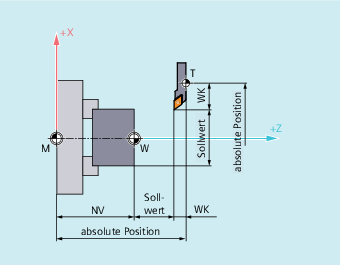

Die Wegberechnung ermittelt die in einem Satz zu verfahrende Wegstrecke unter Berücksichtigung aller Verschiebungen und Korrekturen.
Allgemein gilt:
Weg = Sollwert - Istwert + Nullpunktverschiebung (NV) + Werkzeugkorrektur (WK)
Wird in einem neuen Programmsatz eine neue Nullpunktverschiebung und eine neue Werkzeugkorrektur programmiert, so gilt:
bei Bezugsmaßeingabe:
Weg = (Bezugsmaß P2 - Bezugsmaß P1) + (NV P2 - NV P1) + (WK P2 - WK P1).
bei Kettenmaßeingabe:
Weg = Kettenmaß + (NV P2 - NV P1) + (WK P2 - WK P1).